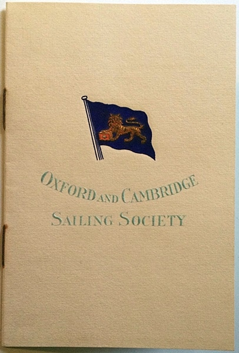
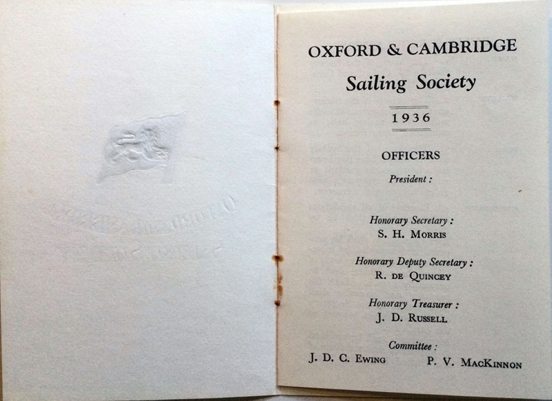

Up until the 1970's, the Society produced an annual members booklet - print and white mail ruled OK in those days! The Society was fortunate in having a several members or supporters over the years who were printers, and they subsidised the production. The booklet, as you will see from the photos below, had a beautifully embossed Society burgee on the cover. A photo of one such cover was used to prepare the burgee that appears in this site's header image above.
This booklet was possibly the first, certainly not more than the second, annual booklet produced by the Society. The office of President is vacant because the President, Sir John Beal, had died unexpectedly in December 1935 - his year of election - and his office was left vacant for 1936 as a mark of respect.

Cover of 1936 Handbook

Page 1 of opened handbook - showing embossing on front cover